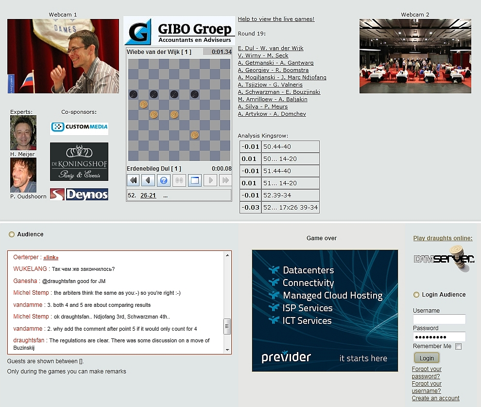

Gibo World Championship Draughts 2011
The Netherlands, Emmeloord and Urk, 7-28 May 2011
Home
Live Games
Keuze menu (Java)
Partijen met live analyse
Alle partijen (Java)
Alle partijen (Oerterp)
WC2011
Results
Played games
Analyses H. Meyer
Analyses G. Boom
Analyses W. Wesselink
Games Schedule
Program
In the News
Photo/video
Youtube
Foto's
Uitje Noordoost Polder
Open Kampioenschap Flevoland
Schoolcheckers on Urk
Schoolcheckers Noordoostpolder
Kloksimultaan Ndjofang
Pressconference 16 dec. 2009
Information
Participants
Organisation
Location
External Activities
Simultaneous Clock Ton Sijbrands
Schoolcheckers on Urk
Simultaneous Clock Ndjofang
Results
Games
Photo's
Programbook
Doping Rules
Officiële Toernooi Informatie
Draughts
World Champions
Electronic Draughts Boards
Computeranalysis technics
History of Draughts
Links
Clubs in the Netherlands
Guestbook
Contact
There are no translations available.
